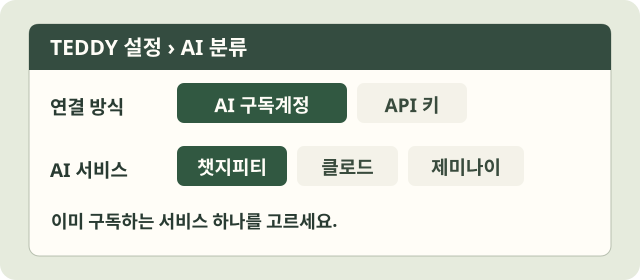
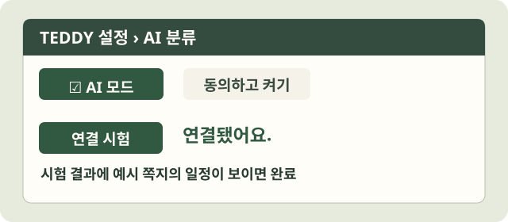

AI 구독 계정 연결하기
TEDDY를 설치한 Windows PC와 평소 구독에 쓰는 계정을 준비하세요. 아래에서 내 서비스 하나만 따라 하면 됩니다. 그림은 눌러야 할 항목을 강조한 화면 예시입니다.
먼저 TEDDY에서 연결 방식을 고르세요
TEDDY 메인 화면 오른쪽 위의 톱니바퀴(설정)를 누르고 AI 분류를 여세요. 연결 방식에서는 AI 구독계정을, 그 아래 AI 서비스에서는 구독 중인 서비스를 누르세요. 이 방식에는 API 키를 입력할 필요가 없습니다.

내 서비스의 설치 방법을 보세요
아래에서 TEDDY에서 고른 서비스 이름을 누르세요. 이미 앱을 설치했다면 로그인 단계부터 시작하세요.
마지막으로 연결을 시험하세요
AI 모드를 켜세요
TEDDY의 설정 → AI 분류에서 AI 모드를 체크하세요. 처음에는 선택한 서비스로 쪽지 내용과 업무 프로필이 전송된다는 안내가 나옵니다. 내용을 읽고 사용하려면 동의하고 켜기를 누르세요.
연결 시험을 눌러 결과를 확인하세요
연결 시험은 예시 쪽지 한 건으로 동작을 확인합니다. 잠시 후 “연결됐어요.”와 예시 쪽지의 일정이 보이면 완료입니다.

따라 하다 막혔나요?
설치했는데 TEDDY가 도구를 찾지 못해요.
ChatGPT는 Codex, Claude는 Code를 열어 준비를 마쳤는지 확인하세요. 제미나이는 Antigravity CLI 설치가 끝나야 합니다. TEDDY에서 서비스를 다시 선택하고 다시 확인을 누르세요.
연결 시험 단추가 클릭되지 않거나 시험에 실패해요.
단추가 클릭되지 않으면 AI 모드 → 동의하고 켜기를 먼저 확인하세요. 실패 메시지가 나오면 인터넷 연결과 선택한 구독 계정을 확인하세요. 서비스에서 사용 한도를 안내하면 그 계정의 한도도 확인해 주세요. 계속 막히면 화면에 표시된 오류 문구를 개발자 문의로 알려 주세요.